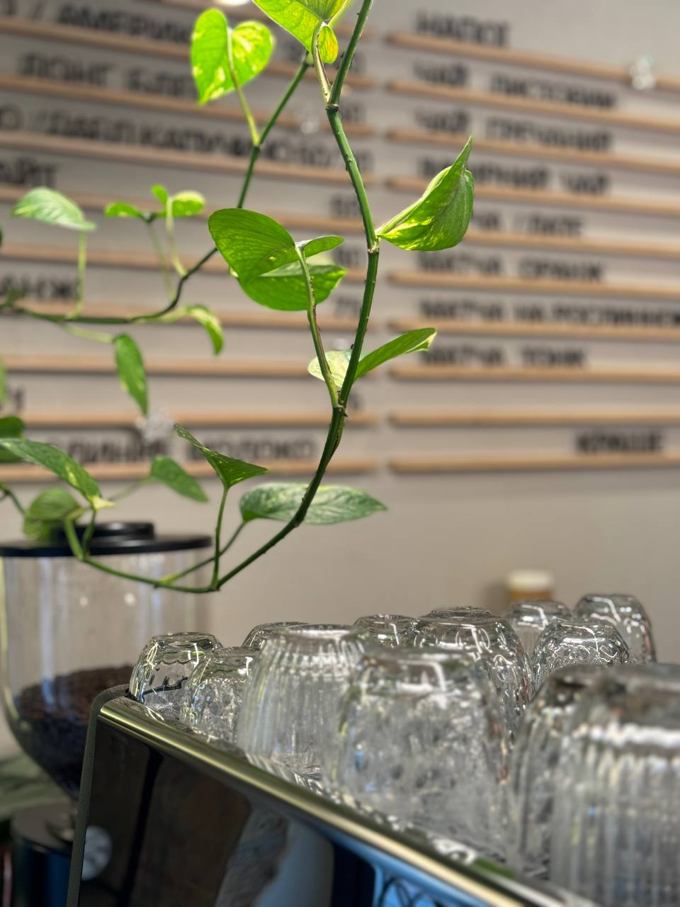
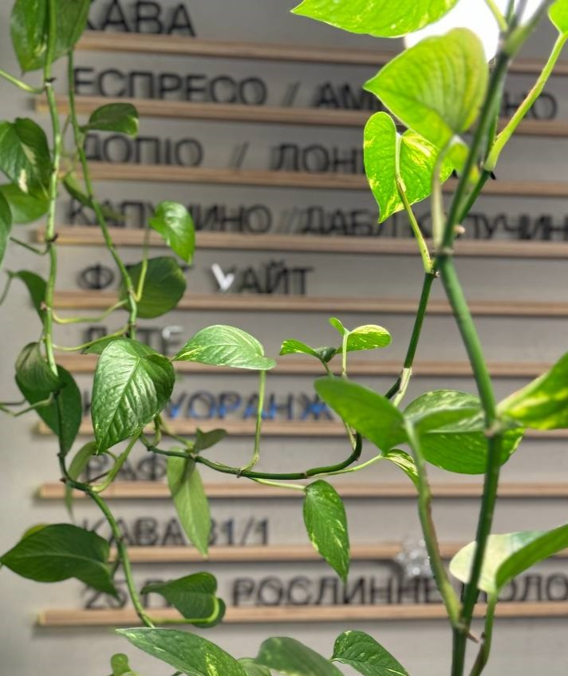
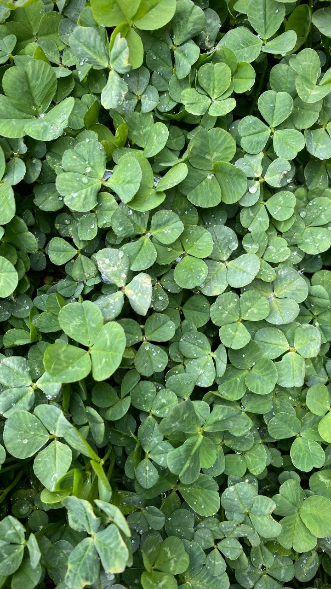
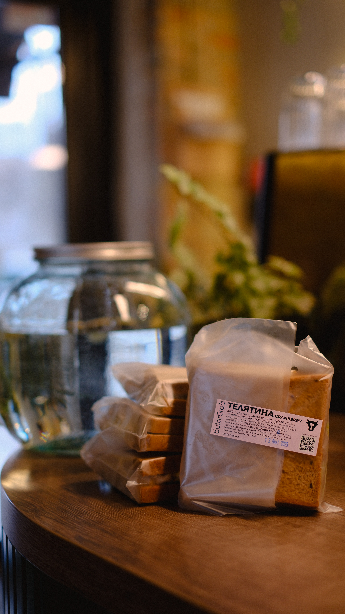
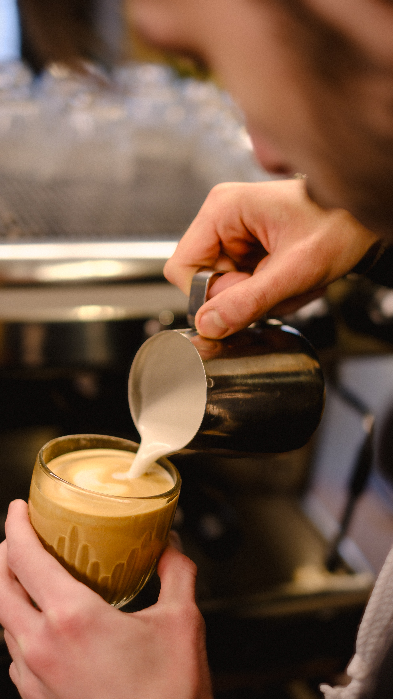
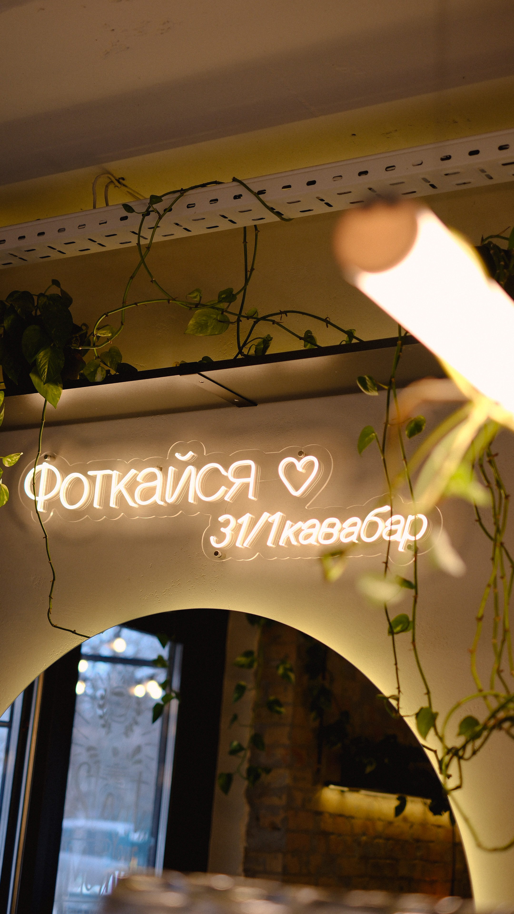
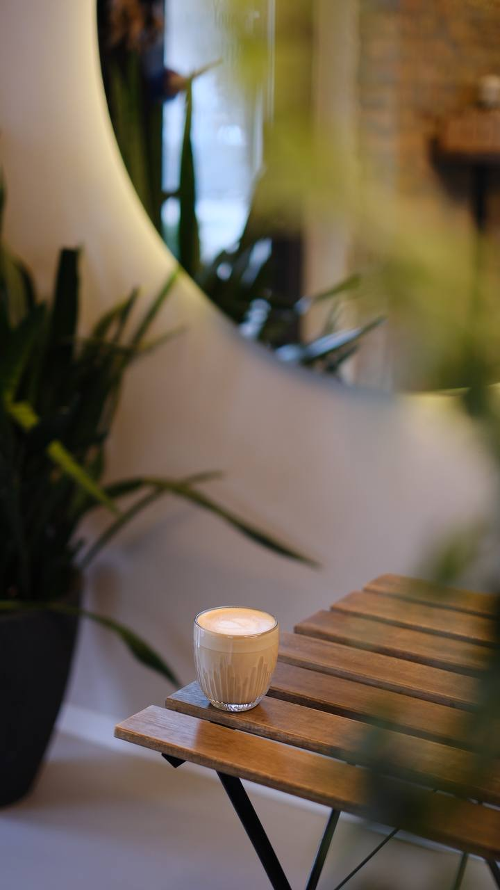
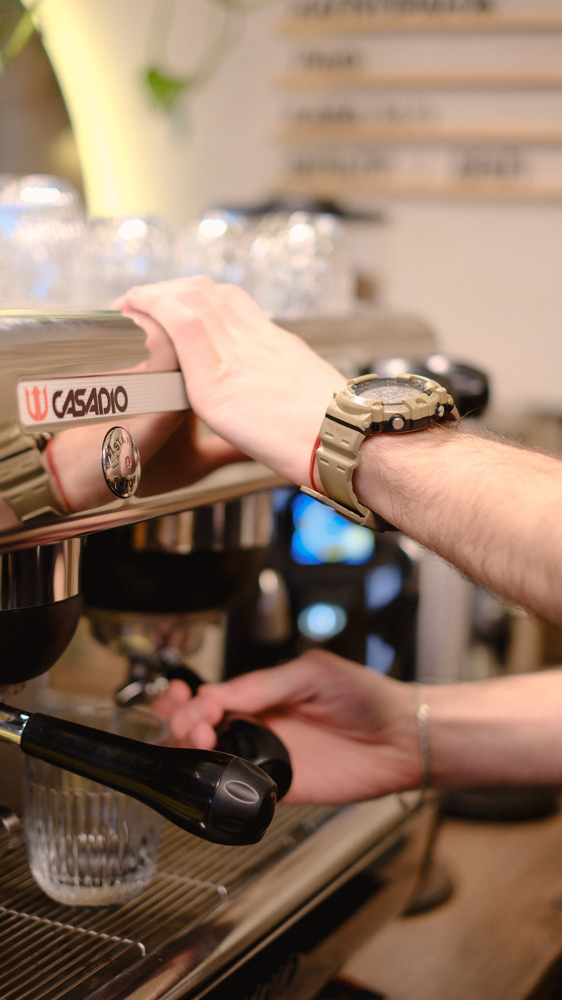

Авторские Рецепты


Галерея Вкуса
Визуальное наслаждение кулинарными творениями и моментами вдохновения.









Наша Философия
Мы верим, что приготовление пищи — это искусство, способное дарить радость и объединять людей. Каждый рецепт на этом сайте создан с душой и проверен временем, чтобы вы могли наслаждаться каждым кусочком.
Присоединяйтесь к нашему гастрономическому путешествию и открывайте новые грани вкуса!